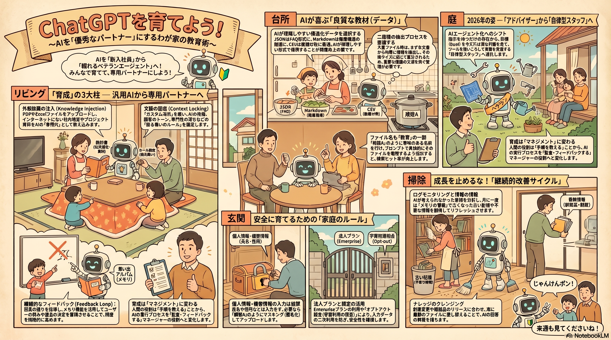
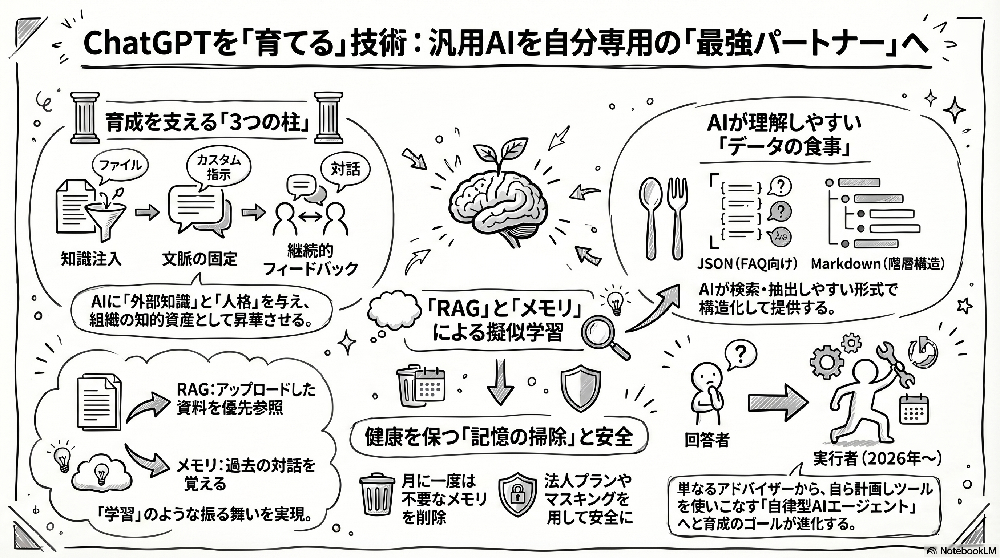

〜うちのAIを専用パートナーにする方法〜
「期待した答えが返ってこない」「毎回指示するのが面倒」…そんなお悩み、今日で解決！
提供：あなたの組織の知的生産性向上委員会
第一話
AIは偏食家！？
知識注入とファイルアップロードのコツ
第二話
忘れっぽいAIを鍛える
メモリとルールの固定化
第三話
うちの優秀な新入り
2026年問題と自律型エージェント化
ChatGPTの育て方
NotebookLM Audio Overview
※ 通勤・移動中にもお聴きいただけます
セミナー内容をビジュアル化したサマリーマップです

育成を支える3つの柱・RAGとメモリ解説

マンガで学ぶ！AIを育てよう
お父さんの心の叫び：
本日のテーマ：手動のAI育成（スパルタ教育）を即刻やめ、
ラクして賢いAIを手に入れる「自動化・省略化」の極意。
110kトークン（約200ページ）を超えると情報が均等抽出され、文末カットや検索漏れが発生する。
人間用の複雑な資料を、AIが読めるように手作業で整理・変換する作業が果てしない。
メモリ機能は便利だが、放置すると古い情報が干渉し回答が硬直化。月1回の定期的な掃除が必要。
毎回教える手間をゼロにする「カスタムGPT」
毎日プロンプト入力
一度作って永久に使い回す
コンセプト：「毎回指示する」から「一度作って使い回す」へのシフト
各タブをクリックして詳細をご確認ください。
PDFやExcelファイルをアップロードし、インターネットにない社内情報やプロジェクト資料をAIの「専門書」として教え込みます。
📋 例：社労士事務所の場合
「カスタム指示」を使い、AIの役割、顧客のトーン、専門性の深さなどの「変わらない働きのルール」を固定します。
土台（静的な規範）
出力方法（トーン、情報の深さ）や、ユーザーの背景情報など、絶対に揺るがない基本設定。
リビング（動的な経験）
「私はベジタリアン」「報告書は箇条書き」など、チャットを通じて自律的に蓄積される恒久的な記憶。
回答の傾向を指導し、メモリ機能を活用してユーザーを持続的な視点の改善を促させることで、精度を継続的に高めます。
4つの成長サイクル
「育成」の正体は、AIの脳を改造することではありません。その場で最適な「コンテキスト（文脈・資料）」を渡し、AIに「組織固有のルール」を理解させる共同作業（検索生成：RAG）なのです。
待機中...
待機中...
待機中...
綺麗に整えるのが面倒なら、最初から「AIが食べやすい形式」で保存しておくのが最大のズボラ術！
構造が明確。FAQなど「1問1答」のナレッジに最適。ルールが明確なので検索精度が最高。
見出し構造（#）だけで情報の階層性をAIが完璧に把握。特定のセクションを参照させる指示書に最適。
1行目に見出しを置くだけ。Advanced Data Analysisが勝手に分析。数値分析向け。
汎用性は高いが、複雑な組み紐みや固定化を避けたシンプルな1カラム構成が必須。
機械に任せて、お茶を飲む。API連携のからくり
1. 社内フォルダに資料を追加
Google Drive
2. 自動化ツールが検知・運搬
Zapier / Make / n8n
3. AIのナレッジベースへ自動注入
ChatGPT API
👨 4. 人間はただ、お茶を飲むだけ
手動アップロードからの完全解放！寝ている間にもAIの知識が最新にアップデートされます。
😴 ズボラ育成法のポイント
既存の資料をそのまま放り込む。綺麗に整えるのが面倒なら、最初から「AIが食べやすい形式」で保存しておくのが最大のズボラ術！
意図しない情報漏洩を防ぐ、安全な自動化の鉄則
ChatGPT EnterpriseやAPIの活用で、入力データがモデル学習に利用されない設定を担保。
個人プランでも「チャット履歴とトレーニング」を必ずOFFにする。一時チャットの活用も有効。
自動アップロード前に、個人名や企業名を記号（顧客A、プロジェクトXなど）に置き換えるマスキング処理を挟む。
2026年問題と自律型エージェント化
🧠 頭脳（LLM）
高度な論理推論で曖昧な指示の意図を把握。
📋 計画（Planning）
巨大な目標を自律的に細分化し、ワークフローを決定。
💾 記憶（Memory）
過去のエラー履歴を保持し一貫性を維持（Project機能の活用）。
⚡ 行動（Tool Use）
ブラウザ操作や外部システム連携を自律実行。
現在：チーム共有
成功したプロンプトやファイル構成を組織内でテンプレート化し共有する。
※パナソニックコネクトの事例：18.6万時間の削減
2026年の未来：エージェント化
アドバイザーからスタッフへ。適切な「目標」と「ツール」を与えるだけで自律的に計画・行動。人間の役割は「操作」から「監査（マネジメント）」へシフト！
（一度作って永久に使い回す）
（究極の丸投げ！最終形態）
（面倒くさい！ドツボの始まり）
（みんなで分担して負担軽減）
AIを育成することで、具体的にどのようなメリットがあるのかをデータで示します。
育成レベルが上がるほど、やり直しの回数が減ります。
テンプレート化により、指示を考える時間が激減します。
毎回教える手間は「カスタムGPT」でゼロにする。
データの更新は「API連携」の全自動コンベアに任せる。
最後は「自律型エージェント」に目標だけ投げて丸投げ！
🤖 AIは魔法の杖ではなく、「可能性を秘めた新入社員」です
適切な「教育（指示）」、良質な「教材（ファイル）」、厳格な「管理（防犯ルール）」が揃ったとき、AIは唯一無二のパートナーへと進化します。
まずは明日、小さな定型業務のファイル（お弁当箱）を一つ、AIに渡してみることから始めましょう。
育成プロセスをなくして、AIと楽しくスマートな毎日を。うーうふふふ！
15スライド構成 / 提供：あなたの組織の知的生産性向上委員会
14スライド構成 / 自動化・省略化の極意